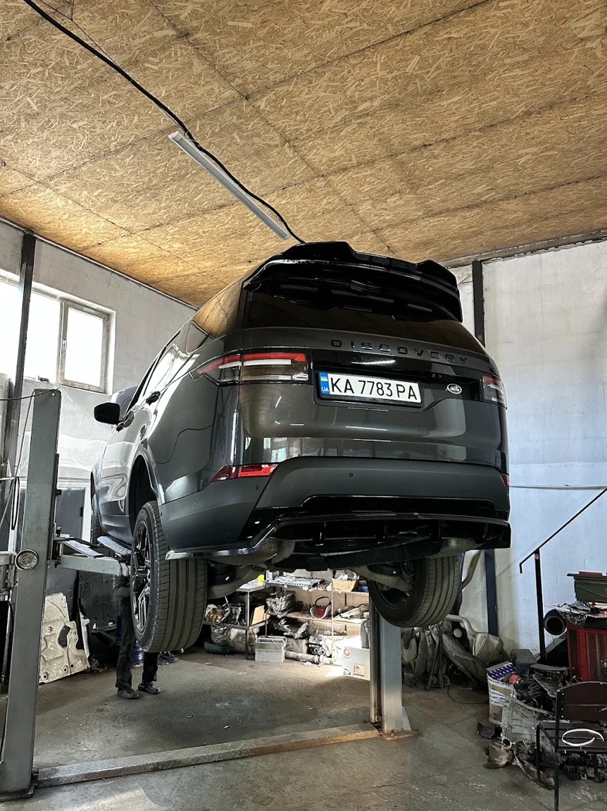

Київ · вулиця Космонавта Поповича, 4/1
WSService
3D розвал-сходження, ремонт двигунів і КПП, автоелектрика.

Послуги
Профіль майстерні- 3D розвал-сходження
- Ремонт двигунів і КПП
- Автоелектрика
- Ремонт і заправка кондиціонерів
Київ · вулиця Космонавта Поповича, 4/1
3D розвал-сходження, ремонт двигунів і КПП, автоелектрика.
